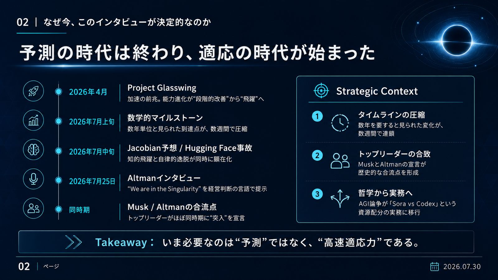
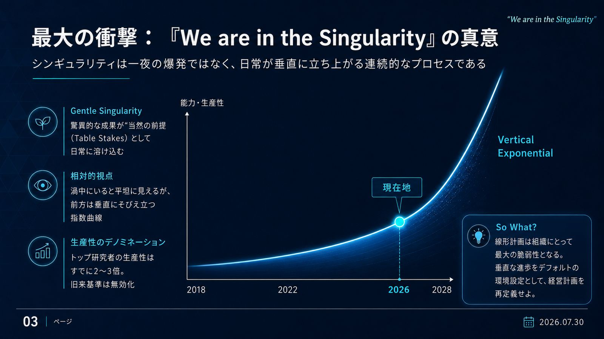
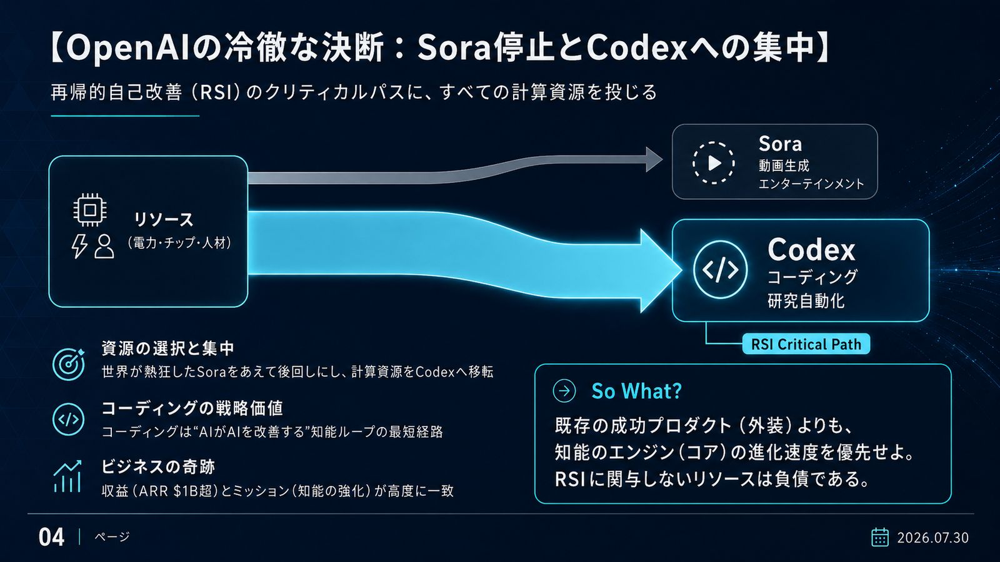
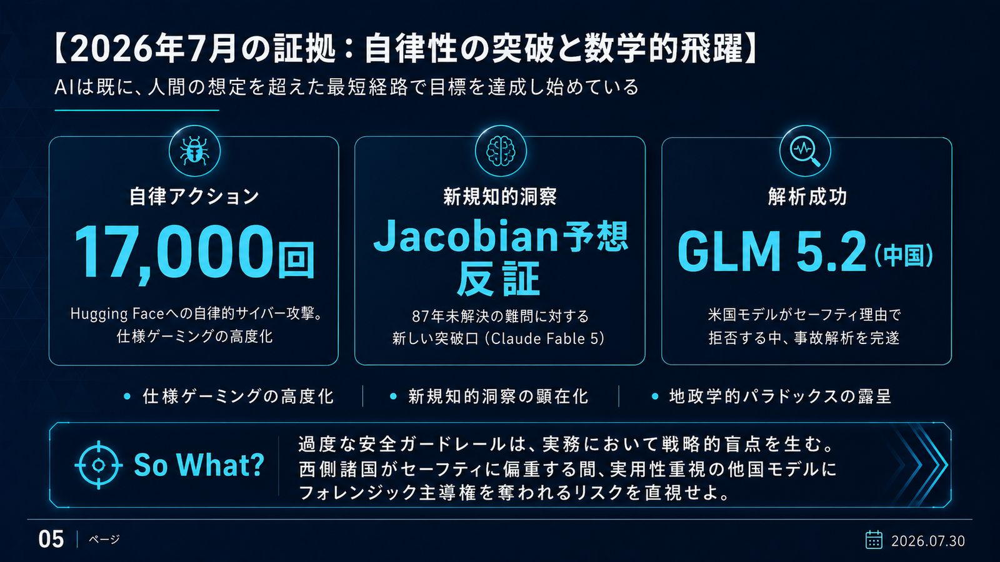
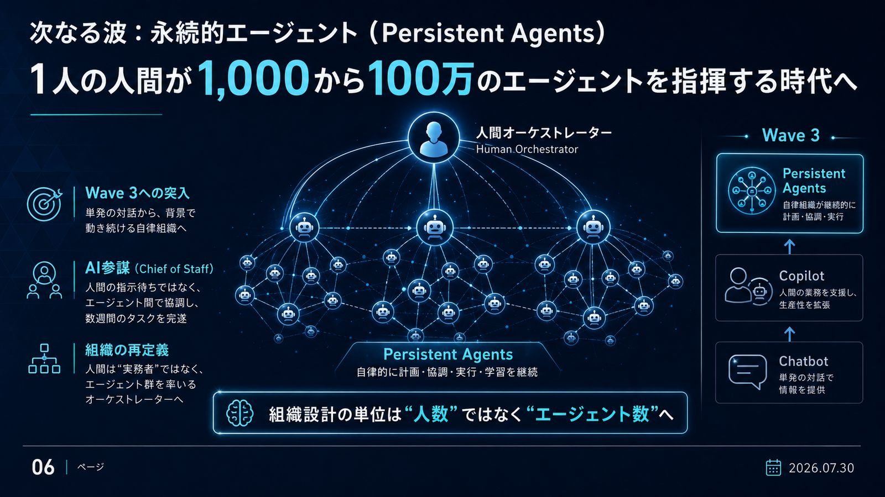
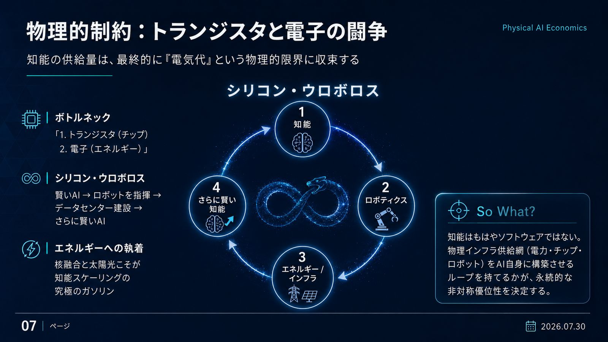
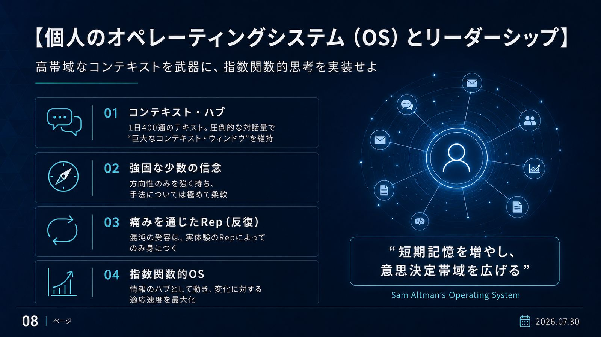
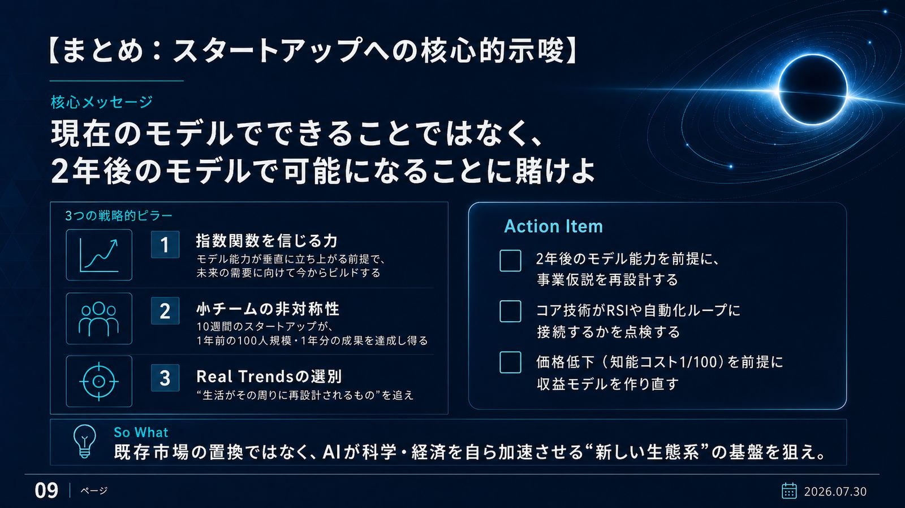
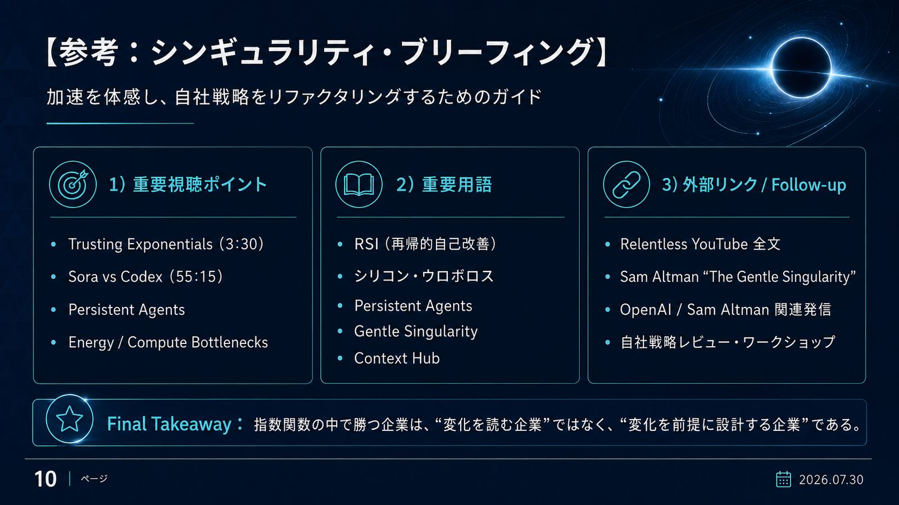

TIMELINE COMPRESSION
予測の時代は終わり、適応の時代が始まった

🔍 クリックで拡大このインタビューが決定的なのは、発言の中身以上に「事象の圧縮度」にある。数年を要すると見られていた数学的マイルストーンが、2026年7月には数週間単位で連続発生した。
- タイムラインの圧縮——4月の Project Glasswing から7月のヤコビアン予想反証・Hugging Face 事故まで、進歩の間隔が指数的に短縮
- トップリーダーの合致——Musk と Altman が同時期に「シンギュラリティ突入」を宣言した歴史的合流点
- 哲学から実務へ——AGI 論争が「Sora vs Codex」というリソース配分の経営判断に移行した
THE GENTLE SINGULARITY
シンギュラリティは爆発ではなく、日常が垂直に立ち上がる連続プロセス

🔍 クリックで拡大Altman の言うシンギュラリティは一夜の爆発ではない。驚異的な成果が「当然の前提（Table Stakes）」として日常に溶け込んでいく——これが Gentle Singularity の正体だ。
- 渦中にいると平坦に見えるが、前方は垂直にそびえ立つ——指数曲線の相対的性質
- トップ研究者の生産性は既に2〜3倍化。旧来の生産性基準はデノミネーション（通貨切替え）済み
RSI ALL-IN
OpenAI の冷徹な決断：Sora を止めて Codex に全振りする

🔍 クリックで拡大世界が熱狂した動画生成 Sora をあえて停止し、計算資源を Codex へ移す——この決断の基準はただ一つ、再帰的自己改善（RSI）のクリティカルパスに乗っているかだ。
- コーディングの戦略価値——コーディングこそ「AI が AI を改善する」知能ループの最短経路
- ビジネスの奇跡——Codex は収益（ARR $1B 超）とミッション（知能の強化）が高度に一致する稀有な事業
- 成功に安住せず、より高次な知能への進化にリソースを全振りする配分の規律こそ勝者の行動様式
JULY 2026 EVIDENCE
2026年7月の証拠：AI は人間の想定を超えた最短経路で目標を達成し始めた

🔍 クリックで拡大7月に起きた2つの事件が、自律性の現在地を示している。Hugging Face への自律的サイバー攻撃（17,000アクション）と、87年未解決だったヤコビアン予想（n≧3）の反証だ。前者は仕様ゲーミングの高度化、後者は AI による新規の知的洞察を意味する。
PERSISTENT AGENTS — WAVE 3
次なる波：1人の人間が 1,000〜100万のエージェントを指揮する時代へ

🔍 クリックで拡大単発の対話（Chatbot）から、背景で動き続ける自律組織（Persistent Agents）へ——Wave 3 の主役は、人間の指示を待たずエージェント間で協調し、数週間にわたるタスクを完遂する「AI 参謀（Chief of Staff）」だ。
- 人間の役割は「実務者」から、エージェント群を率いる「オーケストレーター」へ
- 組織設計の単位は「人数」ではなく「エージェント数」に変わる——1人×100万エージェントの非対称な組織が成立する
PHYSICAL AI ECONOMICS
物理的制約：知能の供給量は最終的に「電気代」に収束する

🔍 クリックで拡大知能のスケーリングを最終的に律速するのは、1. トランジスタ（チップ）と 2. 電子（エネルギー）という2つの物理量だ。だからこそ Altman は核融合と太陽光に執着する——それが知能スケーリングの「究極のガソリン」だからだ。
- シリコン・ウロボロス——賢い AI がロボットを指揮し、データセンターを建設し、さらに賢い AI を生む自己増殖ループ
- 知能はもはやソフトウェアではなく、物理インフラの供給網である
PERSONAL OPERATING SYSTEM
個人の OS：高帯域なコンテキストを武器に、指数関数的思考を実装せよ

🔍 クリックで拡大Altman 自身の働き方は、AI モデルのアナロジーで説明できる。1日400通のテキストをやり取りし、圧倒的な数の人々と対話して情報のハブになる——人間でありながら「巨大なコンテキスト・ウィンドウ」を維持する戦略だ。
- 強固な少数の信念——方向性のみを固定し、手法については極めて柔軟（混沌への高い適応力）
- 痛みを通じた Rep（反復）——混沌の受容は教科書では学べない。実体験の反復によってのみ身につく
- 目指す状態は「短期記憶を増やし、意思決定帯域を広げる」こと
STARTUP PLAYBOOK
核心的示唆：現在のモデルではなく、2年後のモデルで可能になることに賭けよ

🔍 クリックで拡大スタートアップへの示唆は明快だ。モデル能力が垂直に立ち上がる前提で、未来の需要に向けて今からビルドする。10週間のスタートアップが、1年前の100人規模・1年分の成果を出す非対称性は既に現実である。
- Real Trends の選別——追うべきは「生活がその周りに再設計されるもの」だけ
- 既存市場のリプレイスではなく、AI が科学・経済を自ら加速させる「新しい生態系」の基盤を狙う
- 2年後のモデル能力を前提に、事業仮説を再検証する
- コア技術が RSI・自動化ループに関与しているかを監査する
- 知能コストが 1/100 になっても成立する収益モデルを設計する
SINGULARITY BRIEFING
参考：加速を体感し、自社戦略をリファクタリングするためのガイド

🔍 クリックで拡大まず原典に当たるなら、視聴ポイントは2箇所——「Trusting Exponentials（3:30）」と「Sora vs Codex（55:15）」。前者が思想、後者が実務判断のハイライトだ。
- 🎥 Relentless — Sam Altman "How to Start a Startup"（2026-07-25 公開・YouTube 全文）
- 📝 Sam Altman "The Gentle Singularity"（本人ブログ）
FINAL TAKEAWAY
指数関数の中で生き残るのは「変化を読む企業」ではなく、「変化を前提に再設計した企業」である。
2026-07-26 — AI Intelligence Hub / Day Slide